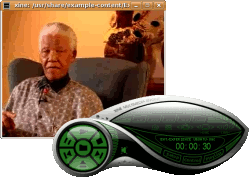
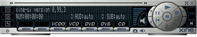
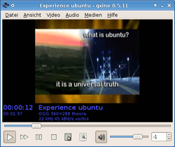
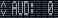
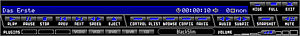
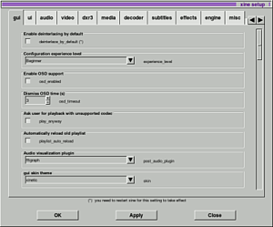

XINE
Dieser Artikel wurde für die folgenden Ubuntu-Versionen getestet:
Ubuntu 16.04 Xenial Xerus
Zum Verständnis dieses Artikels sind folgende Seiten hilfreich:
|  |
Ubuntu told by Nelson Mandela  in xine (2006) |
xine ist ein unter der freien GPL-Lizenz stehender Multimedia-Player. Unterstützt werden alle gängigen Containerformate wie AVI, Ogg Media oder MKV sowie viele verschiedene Video- und Audio-Codecs. Des Weiteren können Datenträger wie DVD oder CDs abgespielt werden. Auch DVB-Unterstützung ist eingebaut.
Im Gegensatz zu früheren Zeiten bieten heute Programme wie MPlayer oder VLC und Multimedia-Frameworks wie GStreamer gleichwertige Funktionen, so dass die Verbreitung von xine inzwischen stark abgenommen hat.
Besonders interessant an xine ist die Möglichkeit, den Ton während des Abspielens verschieben zu können. So lassen sich mit wenig Aufwand auch missglückte Aufnahmen betrachten, bei denen Ton und Bild asynchron laufen – was bei Mitschnitten am PC leicht passieren kann, z.B. wenn Ton- und Bildquelle verschiedene Zeitgeber haben oder der PC durch andere Programme die ungepufferten Daten nicht rechtzeitig auslesen und verarbeiten kann.
Hinweis:
Ggf. startet xine nach dem Computerstart "ohne" Ton; der eingestellte Wert wird nicht gespeichert, sondern auf Null herunter geregelt. Hier muss in der Lautstärkeregelung des Rechners der Wert wieder angepasst werden!
Installation¶
xine¶
|  |
| xine-ui |
Zur Installation [1] einer desktop-unabhängigen, grafischen Oberfläche ist folgendes Paket notwendig:
xine-ui (universe )
 mit apturl
mit apturl
Paketliste zum Kopieren:
sudo apt-get install xine-ui
sudo aptitude install xine-ui
gxine¶
|  |
| gxine |
Für den Einsatz unter GNOME und Xfce empfiehlt sich stattdessen gxine, eine grafische Benutzeroberfläche für die Bibliothek xine-lib, aber mit einer GTK+- anstelle der X11-Oberfläche.
gxine (universe)
gxineplugin (universe )
mit apturl
Paketliste zum Kopieren:
sudo apt-get install gxine gxineplugin
sudo aptitude install gxine gxineplugin
Bedienung¶
Nach der Installation finden sich im GNOME-Menü unter "Anwendungen -> Unterhaltungsmedien/Multimedia" die Einträge "Xine Movie Player" bzw. "gxine". Der Medienplayer bietet eine Vielzahl von Einstellungsmöglichkeiten, deshalb wird in diesem Artikel nur auf das Fundamentale eingegangen. Eventuell fehlende Codecs können mit Hilfe dieser Anleitung installiert werden.
| Menü | |
| Element | Bedeutung / Funktion |
| Wiedergabeliste bearbeiten | |
| Farbe und Kontrast anpassen / Skin ändern | |
| xine anpassen | |
| Informationsanzeige Sender / DVD-Track... | |
| | Umschalten zwischen CD-, DVB-, DVD-Wiedergabe... |
|  | Auswahl der Tonspur |
| Auswahl des Untertitels | |
| Menüsteuerung bei DVD-Wiedergabe / Aufnahmemodus bei DVB-Empfang | |
| Bildschirmphoto | |
Skins¶
 Um das Aussehen des X11-Players anzupassen, gibt es in dem Programm eine sehr nützliche Funktion. Durch einen Rechtsklick auf das Videofenster öffnet sich ein Popup-Fenster. Hier "Settings -> Skin Downloader.." anwählen. In dem neuen Fenster kann ein neues Skin - mit Vorschau - zur Installation ausgewählt werden. Der ausgewählte Skin wird durch einen  auf "Load" installiert. Alternativ können sie im Verzeichnis ~./xine/skins abgespeichert werden. Um den Skin zu wechseln, anwählen und im sich öffnenden Fenster dieses ändern.
auf "Load" installiert. Alternativ können sie im Verzeichnis ~./xine/skins abgespeichert werden. Um den Skin zu wechseln, anwählen und im sich öffnenden Fenster dieses ändern.
CD¶
Um Audio-CDs hören zu können, muss man anwählen und im Setup den Reiter "media" öffnen und dort den korrekten Pfad eingeben.
Playlist¶
| Wiedergabeliste | |
| Element | Bedeutung / Funktion |
| | Wiedergabemodus wählen. |
| Eintrag zur Liste hinzufügen. | |
| Wiedergabeliste laden. | |
| Wiedergabeliste speichern. | |
| Wiedergabeliste abspielen. | |
| Markiertes Element aus der Liste löschen. | |
| Liste leeren. | |
| Markiertes Element in der Liste nach oben verschieben. | |
| Markiertes Element in der Liste nach untern verschieben. | |
| Playliste schließen. | |
Die gespeicherten Wiedergabelisten liegen im Format .tox vor. xine kann mit einem Direktaufruf der Wiedergabeliste gestartet werden [3]:
xine ~/.xine/playlist.tox
Hier lediglich den Verzeichnispfad sowie den Titel der Wiedergabeliste anpassen. Möchte man die Wiedergabeliste von Hand bearbeiten oder erstellen, so geht man wie folgt vor:
Setup¶
 Hier können Einstellungen am Verhalten von xine vorgenommen werden. Mit gelangt man zum Dialog. Folgende Möglichkeiten stehen dem Benutzer zur Verfügung - der Inhalt der Reiter ändert sich je nachdem, welchen Erfahrungslevel man im Reiter "gui" unter "configuration experience level" angegeben hat. Deshalb werden die Reiter nur grob mit den wichtigsten Funktionen umrissen:
| Setup | |
| Reiter | Funktion |
| "gui" | Einstellungen zu Deinterlace, OSD, Erfahrungslevel, ... |
| "ui" | Farbpalette für den OSD |
| "audio" | Änderungen am Soundsystem vornehmen (Treiber, A52-Kompression,...) |
| "video" | Videotreiber ändern (z.B. dxr3), Buffer, Deinterlace etc. ändern. |
| "dxr3" | Einstellungen zu dem Kartentyp Dxr3  |
| "media" | Feintuning an DVB, CD, DVB, VCD et cetera vornehmen. |
| "decoder" | Pfade für die Codecs. |
| "subtitles" | Untertitelkonfiguration. |
| "effectsv" | Effekte steuern. |
| "engine" | Prioritäten ändern. |
| "misc" | Sicherheitsrisiko - deaktiviert lassen! |
Tastaturkürzel¶
| Tastenkürzel | |
| Taste(n) | Wirkung |
| ⏎ | Wiedergabe |
| Pause | |
| ↑ | schnell vorspulen |
| ↓ | Zeitlupe |
| 0 | gehe zum Anfang des Streams |
| 1 - 9 | gehe zu 10 - 90% des Streams |
| ← bzw. → | +/- 15 Sekunden (mit Strg : +/- 60 Sek.) |
| Bild ↑ | gehe zum vorherigen Eintrag in der Liste |
| Bild ↓ | gehe zum nächsten Eintrag in der Liste |
| F | Vollbild an/aus |
| A | Seitenverhältnis (AUTO/16:9/4:3/DVB) |
| I | Interlace-Modus an/aus |
| Z bzw. ⇧ + Z | hinein-/herauszoomen (mit Strg : Zoom horizontal, mit Alt : Zoom vertikal) |
| Einfg | Mauscursor "gefangenhalten" (nützlich für Virtual Screen) |
| + bzw. - | (nicht auf dem Ziffernblock) Audiokanal (Sprache) wechseln |
| , bzw. . | Sprache der Untertitel wechseln |
| N bzw. M | Audio und Video synchronisieren |
| Pos1 | Audio- und Video-Synchronisation auf Standardwert setzen |
| Q | xine beenden |
| H | Video-Fenster deaktivieren (nur Ton-Wiedergabe) |
| G | (oder rechte Maustaste) Player-Fenster deaktivieren |
 Programmübersicht
Programmübersicht- Erstellt mit Inyoka
-
 2004 – 2017 ubuntuusers.de • Einige Rechte vorbehalten
2004 – 2017 ubuntuusers.de • Einige Rechte vorbehalten
Lizenz • Kontakt • Datenschutz • Impressum • Serverstatus -
Serverhousing gespendet von